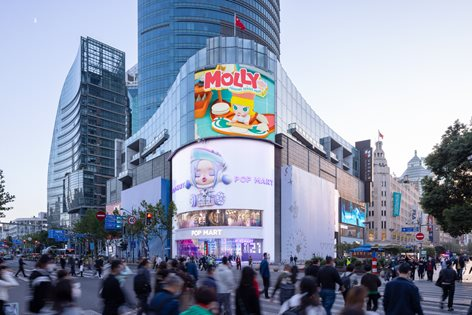

Original Photograph

Illustrator Version


I chose this environment because it contains clear shapes, perspective, and interesting visual elements. The original photograph captures the natural layout of the space, including lighting, objects, and depth. When recreating the scene in Adobe Illustrator, I simplified many of the details into geometric shapes and used flat colors to replace shadows of different buildings in original photo. This transformation allowed me to focus on the main structure of the environment while still preserving the mood of the original image.